Github Basics

What is Git and Github
Git is a Distributed version control software. Distributed because each programmer within the project has its own version of the code running locally. They work to contribute the same master code by patching different project versions. Git provides us tools for tracking projects if something gets out of control, very useful for large projects.On the other hand, Github is where we store the project for free (unless you need privacy, private ownership is paid). For free and private repositories, check out this alternative. In my point of view, Github is like a social media of code sources. People create profiles and share their apps with the community. Many projects are uploaded to Github; Just take an in-depth look at your favorite python's framework.
Using Git + Github, you can
- Clone your repository wherever you want
- Manage project versions
- Go to any point in the timeline of your project
- Filter changes on the master code by creating pull requests
- Share your code/project with other people socializing knowledge
Creating an account on Github
The first step is to create an account on the github web page.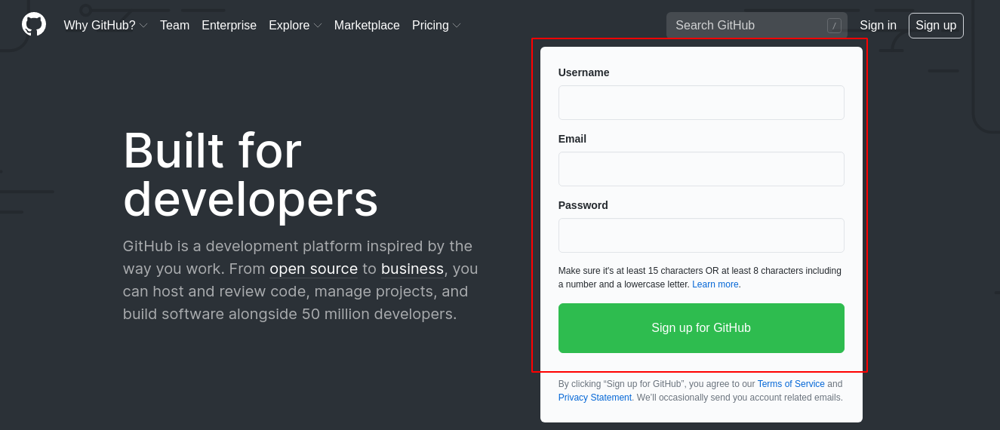 easy peasy! just fill in the form there
Installing Git on your Computer
If you are a Linux user, probably you already have Git installed. If it is not the case, write one of the following lines:sudo apt install git-all # Debian-based distro (e.g., Ubuntu)
dnf install git # Fedora
pacman -S git # Arch LinuxTo check if it is working, type:
git --version.
You should see something like:git version x.xx.x
where x.xx.x is your current version.
Creating a Repository
Interacting with Git
- Clone: Download a project from a GitHub repository. The command is:
git clone {my github repository}
For example,
cd ~/Documents # opening local directory git clone https://github.com/cridonoso/IntroToDataScience # Storing repo in Documents folder - Pull: Update the local repository according to the latest update on GitHub
git pull
For example,
cd ~/Documents/IntroToDataScience # Enter to the project folder git pull # Update the repository - Push: Upload changes to GitHub
git push
Before executing thepushcommand, you need to notify GitHub which are the files you want to modify and what are the changes you made. You can usegit add,git rmandgit commitfor add, remove, and comment changes, respectively.
For example,cd ~/Documents/IntroToDataScience # Enter to the project folder git add new_file.txt # This file is only in my local repo and I ant to upload it git rm wrong_file.txt # This file is already on the repo, but I want to remove it git commit -m 'new_file.txt added and wrong_file.txt removed because it was wrong lol' git pull # Sanity check. Just to see if there are no inconsistencies - Branch and Checkout: A branch is a copy of the repository
at a particular time. This branch will be stored on Github and can be used
by all contributors. Like the master, other branches can also be updated
using pull and push commands.
For example, in TensorFlow's repository (a deep learning framework for Python), they have many branches associated with releases and tests. 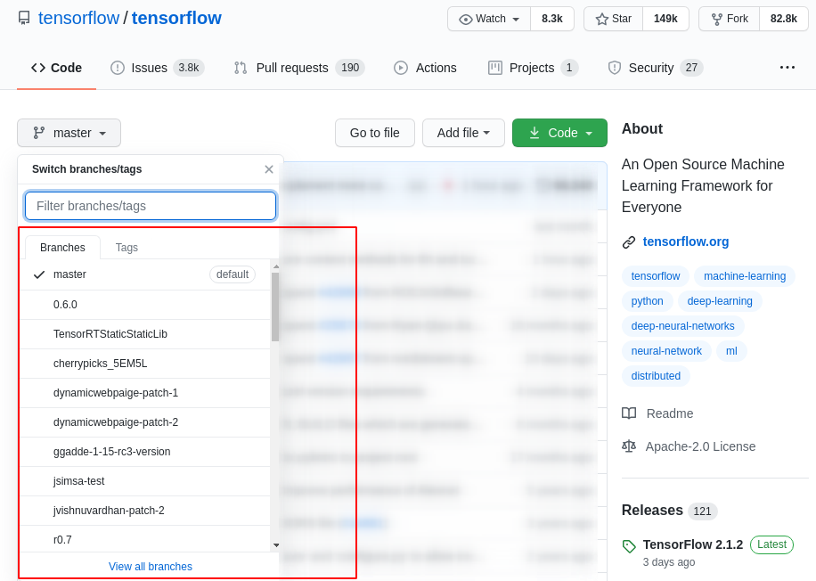 The master branch should always be the stable version. Typically, we use other branches to test new functionalities, and then we merge changes on the master one. I will explain it later.
I will create a new branch from the GitHub webpage. First you have to click on the branch selector: 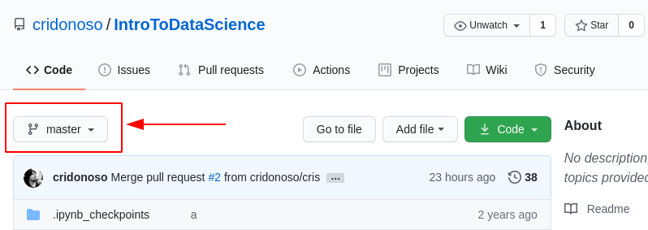 Then you can write a new branch by writing in the textbox marked with the red arrow. 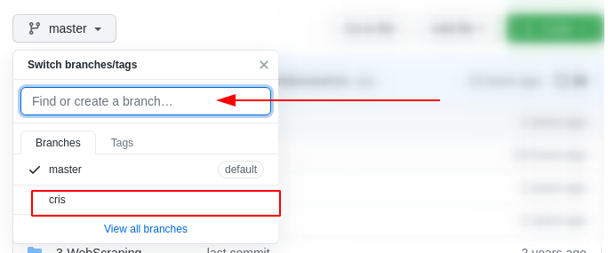 Note I already have another branch in my repository calledcris
Once we have created our new branch, you need to update your local repository usinggit pull.
To see availables branches type:git branchon your terminal 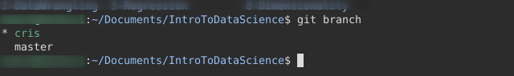 In figure above, we can see two branches (the same we already seen before in the github page). The star symbol before the branch name indicates we are working incrisbranch. If we want to change the branch, write:
git checkout master # change to the master branch git pull # Sanity check - Merge and Pull Request: In this section,
I will explain how to merge branches. In particular, we will
integrate our
crisbranch into themasterone. First we modify some file in ourcrisbranch 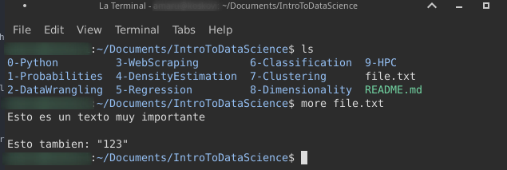 I change the third line and added a new one. 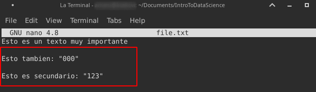 We usegit statusto see our changes 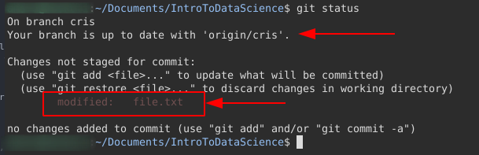 I add the file that I modified locally and push it to mycrisbranch. 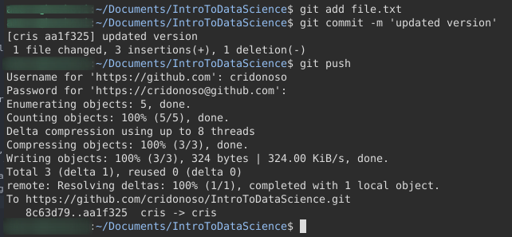 Then I create a new Pull request clicking in the corresponding tab: 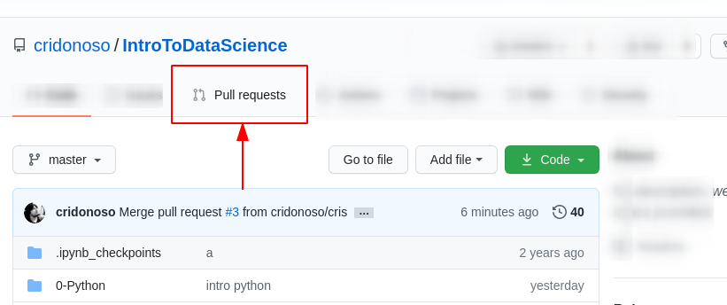 Click on New pull request 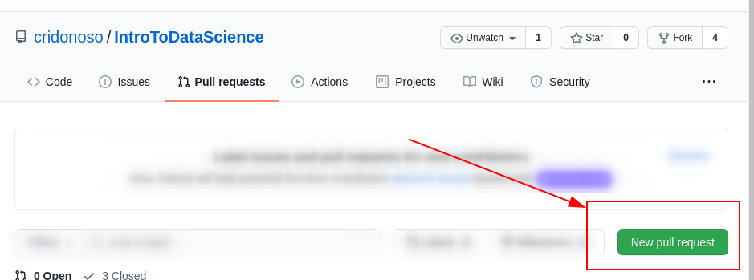 Set the merge configuration. In this case we are mergin fromcristomaster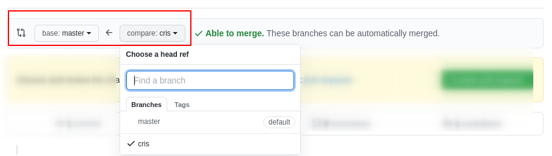 Automatically, we see the changes between the old and newfile.txt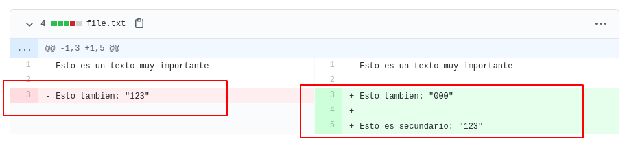 Scroll down and write a pull request message. In case of conflicts, resolve them with the interface of the page. 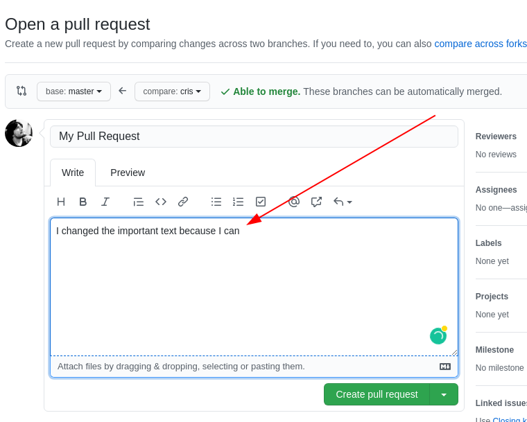 Then, GitHub notifies a new open pull request we neet to approve. We can set this to only get reviewed by some members, but in this case, there are no roles between cris and the other collaborator. 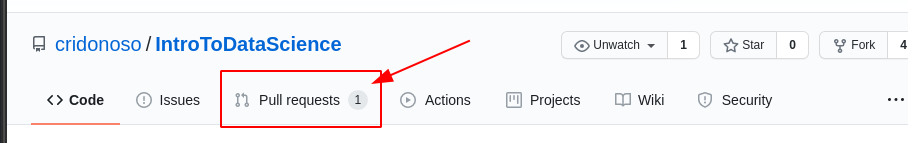 Open the pull request 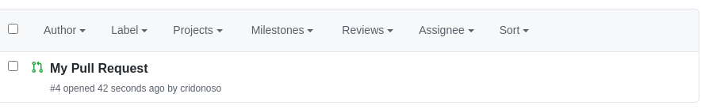 see the changes, and comment it 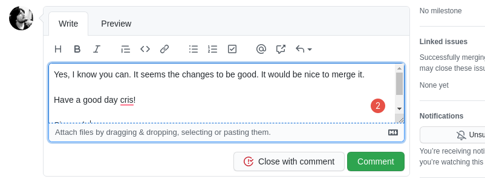 Done! Now all that remains is to approve the pull request 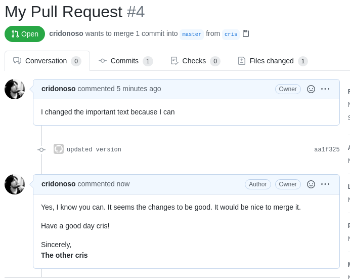 Press the button for merging 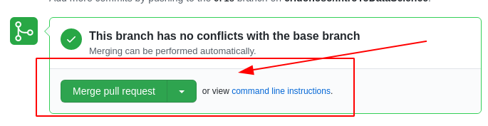 and write a little comment 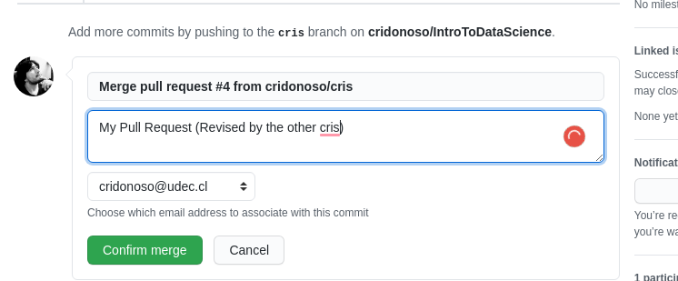 Now thecrisbranch was merged with themasterone. 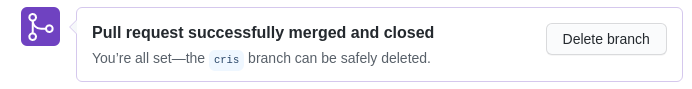 Finally, let's see the changes by pulling themasterbranch 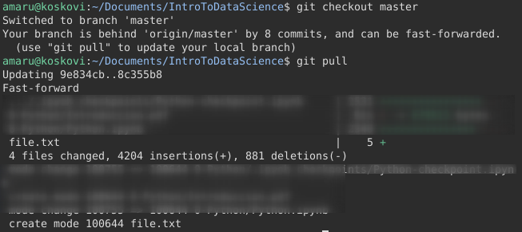 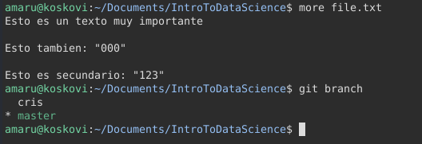